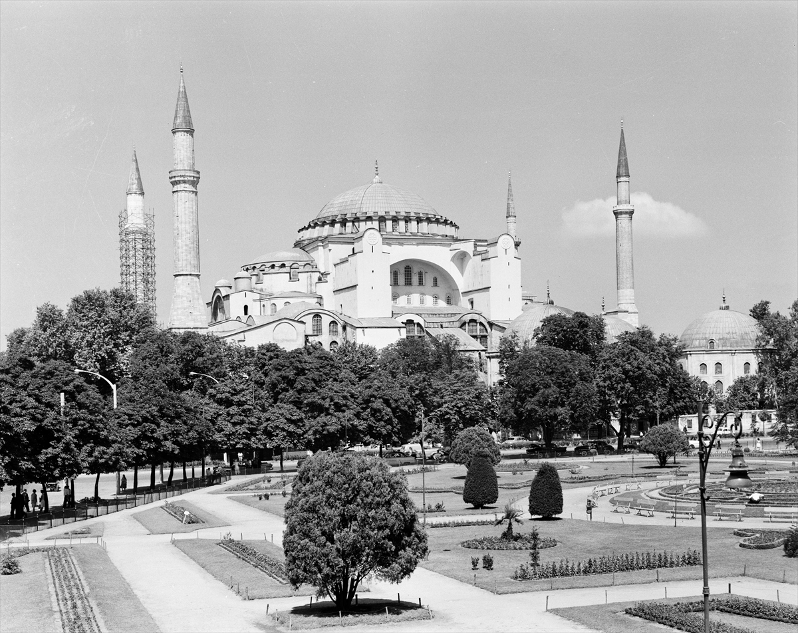
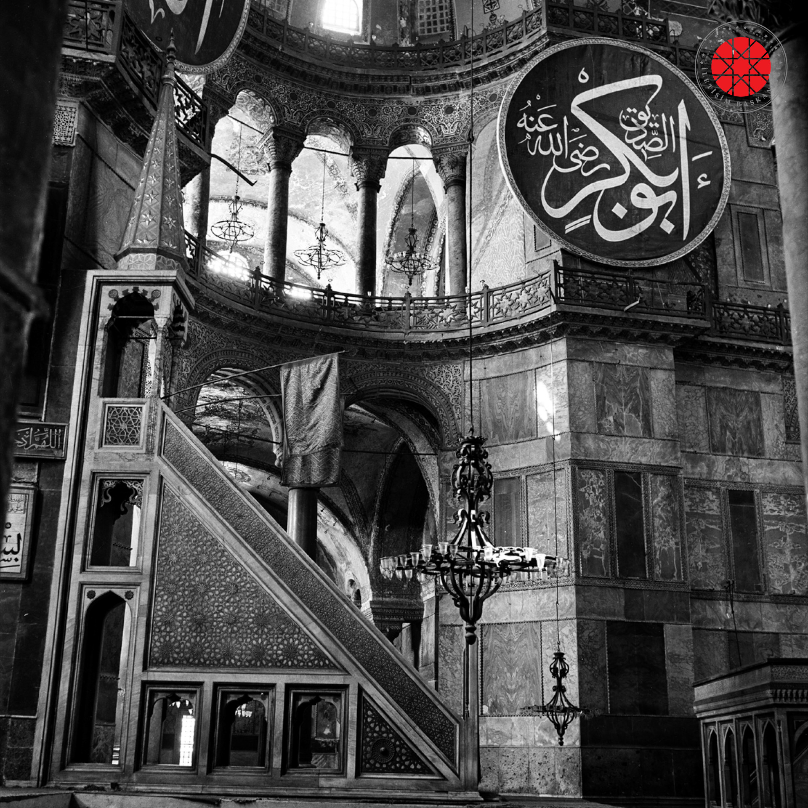

Ayasofya Gezim


Sultanahmet’e ilk kez giden birinin dikkatini hemen minareler çeker öyle ki bu yedi tepeli kentin
bu semti dünyanın tek altı minareli camisi olan Sultanahmet Camisi’ni ve minareleri birbirinden farklı olan Ayasofya camisini
barındırır.Alçakgönüllü beyaz rengi ile mahallenin uslu çocuğu Sultanahmet’e karşın tüm kibirliliği ile Ayasofya karşınızda
durur ve kulağınıza efsanelerini fısıldar…
Öğle saatlerindeki uzun kuyruklar akşamüstüne doğru azalmaya başladı Ayasofya kapısında.Pagan inançları ile Hıristiyanlığı birleştiren
Büyük Konstantin’in zamanında ilk Ayasofya inşa edilmiş fakat daha sonra bazı yangınlarda ve isyanlarda bu mabet yıkılmış. 532 yılında
Roma imparatoru Jüstinyen’in “Adem’den beri görülmemiş bir ibadethane yapacağım” sözü ile bugünkü Ayasofya’nın temelleri atılmış ve 537
yılında kilise olarak merasimlerle açılmış…
Bu bilgileri kapıdaki tabeladan okuduktan sonra heyecanla beklediğimiz ana kapıdan içeriye girdik.Bu girdiğimiz yer kilisenin dış kapısıymış
ve zamanında vaftiz olmayanların bu kapıdan içeriye girmelerine izin verilmiyormuş.İçimden Fatih’e teşekkür ederek Orta kısma açılan kapıdan
girdim ve bana söylendiği gibi hemen yukarı baktım. 55,60 metre yüksekliğindeki kubbe havadan bize bakıyordu..Sonradan öğren-
diğime göre Ayasofya’nın kubbesi defalarca çökmüş ve çökmemesi için harcına değerli madenler konulmuş.Ve Ayasofya’nın o parlak görüntüsünün
nedeni harcında bulunan o değerli madenlermiş.
Girdiğim kapının üstünde duran mozaik panoda İmparator Hz İsa’dan şefaat istiyor şeklinde resmedilmiş ve onun yakınında duran melek ikonaları
yüzlerini kapatmış olarak duruyorlardı.İç kısmının restorasyonunun sürmesinden dolayı, ziyaretçilere yeni açılmış olduğunu öğrendiğimiz üst
kata çıktık. Bu katta her tarafı Hz. Meryem,Hz İsa ve Hz. Yahya mozaikleri süslüyordu katın balkon kısmında ise
Arapça panolar duruyordu.İki dinin de sembolleri burada yan yanaydı ve onlar savaşmıyorlardı, aslına hiç savaşmamışlardı savaşa neden olmanın
üzüntüsü ile birbirlerine bakıyorlardı.Bu katı gezdikten sonra çıkış tarafına dizilmiş olan mermer tabutları inceledik.”Tamam madem öleceğim
en azından tabutum böyle güzel olsun bari” diye bir dilek diledim ve görevlinin müze birazdan kapatılacaktır ikazını
dinledim.Eğer olur da bir gün Ayasofya’yı gezerseniz çıkış kapısına geldiğinizde başınızı yukarı kaldırın çünkü Hz.Meryem’in orada size gülümsediğini
göreceksiniz…
Bir imparatorluk buradan yönetilmişti ve benim gezdiğim yerlerde bir devletin kaderi çizilmişti.Şimdi panoların bulunduğu bu balkonda imparatoriçe
devlet toplantılarını izlemişti.Bizans ya da Büyük Doğu Roma iyi ki böyle güzel bir yapı yapmışsın teşekkür ederim İmparator Jüstinyen.
1 Yorum
Seydi Özgün
Harika bir gezi olmuş.